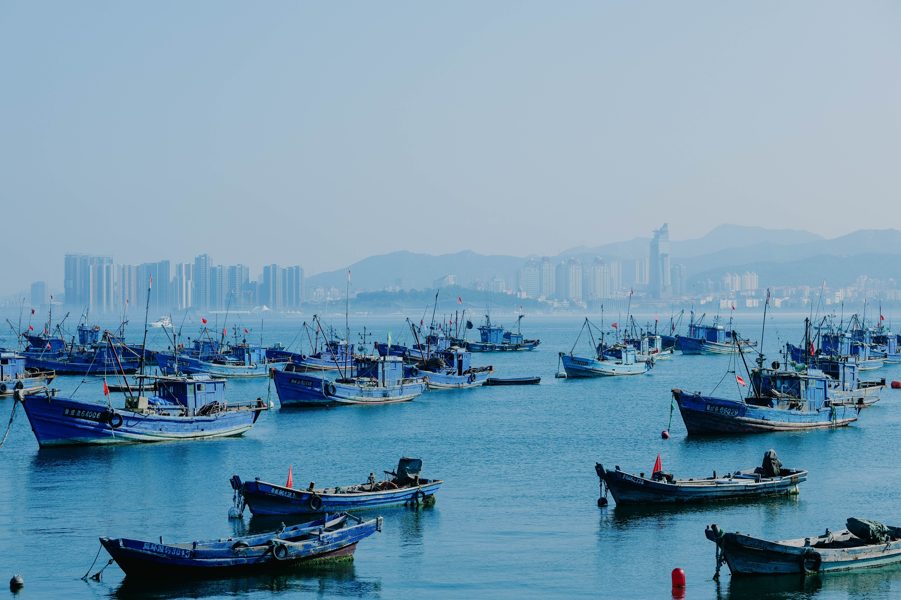

DESTINATION GUIDE

DESTINATION GUIDE
海口临望琼州海峡，是海南自由贸易港的省会门户与连接岛内外的重要城市。骑楼街巷、海风与椰影保存着热带生活的舒展，美兰国际机场、港口与环岛交通让这座海岛北岸城市便捷通达。
位于海南岛北部，隔琼州海峡与雷州半岛相望，是全岛重要的交通与行政中心。
热带季风气候
长夏无冬、温暖湿润，阳光和雨水充足，夏秋降水较多，冬季温和舒适。
港口、商贸和海上交流推动城市成长，也让它长期承担海南对外联系的功能。
琼北文化、南洋侨乡文化与骑楼老街的建筑风貌，共同保留了海口的生活质感。
高温与阵雨常见，请备雨具和防晒；海峡交通受天气影响时应关注通知。